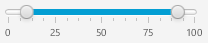
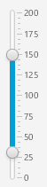

public class RangeSlider
extends javafx.scene.control.Control
Slider control with support
for two 'thumbs', rather than one. A thumb is the non-technical name for the
draggable area inside the Slider / RangeSlider that allows for a value to be
set.
Because the RangeSlider has two thumbs, it also has a few additional rules and user interactions:
Slider control only has one
value property, the RangeSlider has a
low value and a
high value property, not surprisingly
represented by the 'low value' and 'high value' thumbs.
orientation, there are two screenshots below:
| Horizontal: |  |
| Vertical: |  |
orientation property.
Once the orientation is determined, the next most important decision is
to determine what the min / max
and default low / high
values are. The min / max values represent the smallest and largest legal
values for the thumbs to be set to, whereas the low / high values represent
where the thumbs are currently, within the bounds of the min / max values.
Because all four values are required in all circumstances, they are all
required parameters to instantiate a RangeSlider: the constructor takes
four doubles, representing min, max, lowValue and highValue (in that order).
For example, here is a simple horizontal RangeSlider that has a minimum value of 0, a maximum value of 100, a low value of 10 and a high value of 90:
final RangeSlider hSlider = new RangeSlider(0, 100, 10, 90);To configure the hSlider to look like the RangeSlider in the horizontal RangeSlider screenshot above only requires a few additional properties to be set:
final RangeSlider hSlider = new RangeSlider(0, 100, 10, 90);
hSlider.setShowTickMarks(true);
hSlider.setShowTickLabels(true);
hSlider.setBlockIncrement(10);
To create a vertical slider, simply do the following:
final RangeSlider vSlider = new RangeSlider(0, 200, 30, 150);
vSlider.setOrientation(Orientation.VERTICAL);
This code creates a RangeSlider with a min value of 0, a max value of 200, a low value of 30, and a high value of 150.
Slider| Type | Property and Description |
|---|---|
javafx.beans.property.DoubleProperty |
blockIncrement
The amount by which to adjust the slider if the track of the slider is
clicked.
|
javafx.beans.property.BooleanProperty |
highValueChanging
When true, indicates the current high value of this RangeSlider is changing.
|
javafx.beans.property.DoubleProperty |
highValue
|
javafx.beans.property.ObjectProperty<javafx.util.StringConverter<java.lang.Number>> |
labelFormatter
StringConverter used to format tick mark labels.
|
javafx.beans.property.BooleanProperty |
lowValueChanging
When true, indicates the current low value of this RangeSlider is changing.
|
javafx.beans.property.DoubleProperty |
lowValue
|
javafx.beans.property.DoubleProperty |
majorTickUnit
The unit distance between major tick marks.
|
javafx.beans.property.DoubleProperty |
max |
javafx.beans.property.IntegerProperty |
minorTickCount
The number of minor ticks to place between any two major ticks.
|
javafx.beans.property.DoubleProperty |
min |
javafx.beans.property.ObjectProperty<javafx.geometry.Orientation> |
orientation
The orientation of the
Slider can either be horizontal
or vertical. |
javafx.beans.property.BooleanProperty |
showTickLabels
Indicates that the labels for tick marks should be shown.
|
javafx.beans.property.BooleanProperty |
showTickMarks |
javafx.beans.property.BooleanProperty |
snapToTicks
Indicates whether the
lowValueProperty() value} /
highValueProperty() value} of the Slider should always
be aligned with the tick marks. |
contextMenu, skinClassName, skin, tooltipbackground, border, cacheShape, centerShape, height, insets, maxHeight, maxWidth, minHeight, minWidth, opaqueInsets, padding, prefHeight, prefWidth, scaleShape, shape, snapToPixel, widthaccessibleHelp, accessibleRoleDescription, accessibleRole, accessibleText, blendMode, boundsInLocal, boundsInParent, cacheHint, cache, clip, cursor, depthTest, disabled, disable, effectiveNodeOrientation, effect, eventDispatcher, focused, focusTraversable, hover, id, impl_showMnemonics, impl_treeVisible, inputMethodRequests, layoutBounds, layoutX, layoutY, localToParentTransform, localToSceneTransform, managed, mouseTransparent, nodeOrientation, onContextMenuRequested, onDragDetected, onDragDone, onDragDropped, onDragEntered, onDragExited, onDragOver, onInputMethodTextChanged, onKeyPressed, onKeyReleased, onKeyTyped, onMouseClicked, onMouseDragEntered, onMouseDragExited, onMouseDragged, onMouseDragOver, onMouseDragReleased, onMouseEntered, onMouseExited, onMouseMoved, onMousePressed, onMouseReleased, onRotate, onRotationFinished, onRotationStarted, onScrollFinished, onScroll, onScrollStarted, onSwipeDown, onSwipeLeft, onSwipeRight, onSwipeUp, onTouchMoved, onTouchPressed, onTouchReleased, onTouchStationary, onZoomFinished, onZoom, onZoomStarted, opacity, parent, pickOnBounds, pressed, rotate, rotationAxis, scaleX, scaleY, scaleZ, scene, style, translateX, translateY, translateZ, visible| Constructor and Description |
|---|
RangeSlider()
Creates a new RangeSlider instance using default values of 0.0, 0.25, 0.75
and 1.0 for min/lowValue/highValue/max, respectively.
|
RangeSlider(double min,
double max,
double lowValue,
double highValue)
Instantiates a default, horizontal RangeSlider with the specified
min/max/low/high values.
|
| Modifier and Type | Method and Description |
|---|---|
void |
adjustHighValue(double newValue)
|
void |
adjustLowValue(double newValue)
|
javafx.beans.property.DoubleProperty |
blockIncrementProperty()
The amount by which to adjust the slider if the track of the slider is
clicked.
|
protected javafx.scene.control.Skin<?> |
createDefaultSkin() |
void |
decrementHighValue()
Decrements the
high value by the
block increment amount. |
void |
decrementLowValue()
Decrements the
low value by the
block increment amount. |
double |
getBlockIncrement() |
static java.util.List<javafx.css.CssMetaData<? extends javafx.css.Styleable,?>> |
getClassCssMetaData() |
java.util.List<javafx.css.CssMetaData<? extends javafx.css.Styleable,?>> |
getControlCssMetaData() |
double |
getHighValue()
Returns the current high value for the range slider.
|
javafx.util.StringConverter<java.lang.Number> |
getLabelFormatter()
Gets the value of the property tickLabelFormatter.
|
double |
getLowValue()
Returns the current low value for the range slider.
|
double |
getMajorTickUnit() |
double |
getMax() |
double |
getMin() |
int |
getMinorTickCount() |
javafx.geometry.Orientation |
getOrientation() |
java.lang.String |
getUserAgentStylesheet() |
protected java.lang.String |
getUserAgentStylesheet(java.lang.Class<?> clazz,
java.lang.String fileName)
A helper method that ensures that the resource based lookup of the user
agent stylesheet only happens once.
|
javafx.beans.property.BooleanProperty |
highValueChangingProperty()
When true, indicates the current high value of this RangeSlider is changing.
|
javafx.beans.property.DoubleProperty |
highValueProperty()
|
void |
incrementHighValue()
Increments the
high value by the
block increment amount. |
void |
incrementLowValue()
Increments the
low value by the
block increment amount. |
boolean |
isHighValueChanging()
Returns whether or not the high value of this RangeSlider is currently
changing.
|
boolean |
isLowValueChanging()
Returns whether or not the low value of this RangeSlider is currently
changing.
|
boolean |
isShowTickLabels() |
boolean |
isShowTickMarks() |
boolean |
isSnapToTicks() |
javafx.beans.property.ObjectProperty<javafx.util.StringConverter<java.lang.Number>> |
labelFormatterProperty()
StringConverter used to format tick mark labels.
|
javafx.beans.property.BooleanProperty |
lowValueChangingProperty()
When true, indicates the current low value of this RangeSlider is changing.
|
javafx.beans.property.DoubleProperty |
lowValueProperty()
|
javafx.beans.property.DoubleProperty |
majorTickUnitProperty()
The unit distance between major tick marks.
|
javafx.beans.property.DoubleProperty |
maxProperty() |
javafx.beans.property.IntegerProperty |
minorTickCountProperty()
The number of minor ticks to place between any two major ticks.
|
javafx.beans.property.DoubleProperty |
minProperty() |
javafx.beans.property.ObjectProperty<javafx.geometry.Orientation> |
orientationProperty()
The orientation of the
Slider can either be horizontal
or vertical. |
void |
setBlockIncrement(double value)
Sets the amount by which to adjust the slider if the track of the slider is
clicked.
|
void |
setHighValue(double d)
|
void |
setHighValueChanging(boolean value)
Call this when high low value is changing.
|
void |
setLabelFormatter(javafx.util.StringConverter<java.lang.Number> value)
Sets the value of the property tickLabelFormatter.
|
void |
setLowValue(double d)
|
void |
setLowValueChanging(boolean value)
Call this when the low value is changing.
|
void |
setMajorTickUnit(double value)
Sets the unit distance between major tick marks.
|
void |
setMax(double value)
Sets the maximum value for this Slider.
|
void |
setMin(double value)
Sets the minimum value for this Slider.
|
void |
setMinorTickCount(int value)
Sets the number of minor ticks to place between any two major ticks.
|
void |
setOrientation(javafx.geometry.Orientation value)
Sets the orientation of the Slider.
|
void |
setShowTickLabels(boolean value)
Sets whether labels of tick marks should be shown or not.
|
void |
setShowTickMarks(boolean value)
Specifies whether the
Skin implementation should show tick marks. |
void |
setSnapToTicks(boolean value)
Sets the value of SnapToTicks.
|
javafx.beans.property.BooleanProperty |
showTickLabelsProperty()
Indicates that the labels for tick marks should be shown.
|
javafx.beans.property.BooleanProperty |
showTickMarksProperty() |
javafx.beans.property.BooleanProperty |
snapToTicksProperty()
Indicates whether the
lowValueProperty() value} /
highValueProperty() value} of the Slider should always
be aligned with the tick marks. |
computeMaxHeight, computeMaxWidth, computeMinHeight, computeMinWidth, computePrefHeight, computePrefWidth, contextMenuProperty, executeAccessibleAction, getBaselineOffset, getContextMenu, getCssMetaData, getSkin, getTooltip, impl_cssGetFocusTraversableInitialValue, impl_processCSS, isResizable, layoutChildren, queryAccessibleAttribute, setContextMenu, setSkin, setTooltip, skinClassNameProperty, skinProperty, tooltipPropertybackgroundProperty, borderProperty, cacheShapeProperty, centerShapeProperty, getBackground, getBorder, getHeight, getInsets, getMaxHeight, getMaxWidth, getMinHeight, getMinWidth, getOpaqueInsets, getPadding, getPrefHeight, getPrefWidth, getShape, getWidth, heightProperty, impl_computeContains, impl_computeGeomBounds, impl_computeLayoutBounds, impl_createPeer, impl_notifyLayoutBoundsChanged, impl_pickNodeLocal, impl_updatePeer, insetsProperty, isCacheShape, isCenterShape, isScaleShape, isSnapToPixel, layoutInArea, layoutInArea, layoutInArea, layoutInArea, maxHeight, maxHeightProperty, maxWidth, maxWidthProperty, minHeight, minHeightProperty, minWidth, minWidthProperty, opaqueInsetsProperty, paddingProperty, positionInArea, positionInArea, prefHeight, prefHeightProperty, prefWidth, prefWidthProperty, resize, scaleShapeProperty, setBackground, setBorder, setCacheShape, setCenterShape, setHeight, setMaxHeight, setMaxSize, setMaxWidth, setMinHeight, setMinSize, setMinWidth, setOpaqueInsets, setPadding, setPrefHeight, setPrefSize, setPrefWidth, setScaleShape, setShape, setSnapToPixel, setWidth, shapeProperty, snappedBottomInset, snappedLeftInset, snappedRightInset, snappedTopInset, snapPosition, snapSize, snapSpace, snapToPixelProperty, widthPropertygetChildren, getChildrenUnmodifiable, getImpl_traversalEngine, getManagedChildren, getStylesheets, impl_getAllParentStylesheets, impl_processMXNode, impl_traversalEngineProperty, isNeedsLayout, layout, lookup, needsLayoutProperty, requestLayout, requestParentLayout, setImpl_traversalEngine, setNeedsLayout, updateBoundsaccessibleHelpProperty, accessibleRoleDescriptionProperty, accessibleRoleProperty, accessibleTextProperty, addEventFilter, addEventHandler, applyCss, autosize, blendModeProperty, boundsInLocalProperty, boundsInParentProperty, buildEventDispatchChain, cacheHintProperty, cacheProperty, clipProperty, computeAreaInScreen, contains, contains, containsBounds, cursorProperty, depthTestProperty, disabledProperty, disableProperty, effectiveNodeOrientationProperty, effectProperty, eventDispatcherProperty, fireEvent, focusedProperty, focusTraversableProperty, getAccessibleHelp, getAccessibleRole, getAccessibleRoleDescription, getAccessibleText, getBlendMode, getBoundsInLocal, getBoundsInParent, getCacheHint, getClip, getContentBias, getCursor, getDepthTest, getEffect, getEffectiveNodeOrientation, getEventDispatcher, getId, getInputMethodRequests, getLayoutBounds, getLayoutX, getLayoutY, getLocalToParentTransform, getLocalToSceneTransform, getNodeOrientation, getOnContextMenuRequested, getOnDragDetected, getOnDragDone, getOnDragDropped, getOnDragEntered, getOnDragExited, getOnDragOver, getOnInputMethodTextChanged, getOnKeyPressed, getOnKeyReleased, getOnKeyTyped, getOnMouseClicked, getOnMouseDragEntered, getOnMouseDragExited, getOnMouseDragged, getOnMouseDragOver, getOnMouseDragReleased, getOnMouseEntered, getOnMouseExited, getOnMouseMoved, getOnMousePressed, getOnMouseReleased, getOnRotate, getOnRotationFinished, getOnRotationStarted, getOnScroll, getOnScrollFinished, getOnScrollStarted, getOnSwipeDown, getOnSwipeLeft, getOnSwipeRight, getOnSwipeUp, getOnTouchMoved, getOnTouchPressed, getOnTouchReleased, getOnTouchStationary, getOnZoom, getOnZoomFinished, getOnZoomStarted, getOpacity, getParent, getProperties, getPseudoClassStates, getRotate, getRotationAxis, getScaleX, getScaleY, getScaleZ, getScene, getStyle, getStyleableParent, getStyleClass, getTransforms, getTranslateX, getTranslateY, getTranslateZ, getTypeSelector, getUserData, hasProperties, hoverProperty, idProperty, impl_clearDirty, impl_computeIntersects, impl_cssGetCursorInitialValue, impl_findStyles, impl_geomChanged, impl_getLeafTransform, impl_getMatchingStyles, impl_getPeer, impl_getPivotX, impl_getPivotY, impl_getPivotZ, impl_getStyleMap, impl_hasTransforms, impl_intersects, impl_intersectsBounds, impl_isDirty, impl_isDirtyEmpty, impl_isShowMnemonics, impl_isTreeVisible, impl_layoutBoundsChanged, impl_markDirty, impl_pickNode, impl_processCSS, impl_reapplyCSS, impl_setShowMnemonics, impl_setStyleMap, impl_showMnemonicsProperty, impl_syncPeer, impl_transformsChanged, impl_traverse, impl_treeVisibleProperty, inputMethodRequestsProperty, intersects, intersects, isCache, isDisable, isDisabled, isFocused, isFocusTraversable, isHover, isManaged, isMouseTransparent, isPickOnBounds, isPressed, isVisible, layoutBoundsProperty, layoutXProperty, layoutYProperty, localToParent, localToParent, localToParent, localToParent, localToParent, localToParentTransformProperty, localToScene, localToScene, localToScene, localToScene, localToScene, localToScene, localToScene, localToScene, localToScene, localToScene, localToSceneTransformProperty, localToScreen, localToScreen, localToScreen, localToScreen, localToScreen, lookupAll, managedProperty, mouseTransparentProperty, nodeOrientationProperty, notifyAccessibleAttributeChanged, onContextMenuRequestedProperty, onDragDetectedProperty, onDragDoneProperty, onDragDroppedProperty, onDragEnteredProperty, onDragExitedProperty, onDragOverProperty, onInputMethodTextChangedProperty, onKeyPressedProperty, onKeyReleasedProperty, onKeyTypedProperty, onMouseClickedProperty, onMouseDragEnteredProperty, onMouseDragExitedProperty, onMouseDraggedProperty, onMouseDragOverProperty, onMouseDragReleasedProperty, onMouseEnteredProperty, onMouseExitedProperty, onMouseMovedProperty, onMousePressedProperty, onMouseReleasedProperty, onRotateProperty, onRotationFinishedProperty, onRotationStartedProperty, onScrollFinishedProperty, onScrollProperty, onScrollStartedProperty, onSwipeDownProperty, onSwipeLeftProperty, onSwipeRightProperty, onSwipeUpProperty, onTouchMovedProperty, onTouchPressedProperty, onTouchReleasedProperty, onTouchStationaryProperty, onZoomFinishedProperty, onZoomProperty, onZoomStartedProperty, opacityProperty, parentProperty, parentToLocal, parentToLocal, parentToLocal, parentToLocal, parentToLocal, pickOnBoundsProperty, pressedProperty, pseudoClassStateChanged, relocate, removeEventFilter, removeEventHandler, requestFocus, resizeRelocate, rotateProperty, rotationAxisProperty, scaleXProperty, scaleYProperty, scaleZProperty, sceneProperty, sceneToLocal, sceneToLocal, sceneToLocal, sceneToLocal, sceneToLocal, sceneToLocal, sceneToLocal, sceneToLocal, screenToLocal, screenToLocal, screenToLocal, setAccessibleHelp, setAccessibleRole, setAccessibleRoleDescription, setAccessibleText, setBlendMode, setCache, setCacheHint, setClip, setCursor, setDepthTest, setDisable, setDisabled, setEffect, setEventDispatcher, setEventHandler, setFocused, setFocusTraversable, setHover, setId, setInputMethodRequests, setLayoutX, setLayoutY, setManaged, setMouseTransparent, setNodeOrientation, setOnContextMenuRequested, setOnDragDetected, setOnDragDone, setOnDragDropped, setOnDragEntered, setOnDragExited, setOnDragOver, setOnInputMethodTextChanged, setOnKeyPressed, setOnKeyReleased, setOnKeyTyped, setOnMouseClicked, setOnMouseDragEntered, setOnMouseDragExited, setOnMouseDragged, setOnMouseDragOver, setOnMouseDragReleased, setOnMouseEntered, setOnMouseExited, setOnMouseMoved, setOnMousePressed, setOnMouseReleased, setOnRotate, setOnRotationFinished, setOnRotationStarted, setOnScroll, setOnScrollFinished, setOnScrollStarted, setOnSwipeDown, setOnSwipeLeft, setOnSwipeRight, setOnSwipeUp, setOnTouchMoved, setOnTouchPressed, setOnTouchReleased, setOnTouchStationary, setOnZoom, setOnZoomFinished, setOnZoomStarted, setOpacity, setPickOnBounds, setPressed, setRotate, setRotationAxis, setScaleX, setScaleY, setScaleZ, setStyle, setTranslateX, setTranslateY, setTranslateZ, setUserData, setVisible, snapshot, snapshot, startDragAndDrop, startFullDrag, styleProperty, toBack, toFront, toString, translateXProperty, translateYProperty, translateZProperty, usesMirroring, visiblePropertypublic final javafx.beans.property.DoubleProperty lowValueProperty
min and max properties. By
default this value is 0.getLowValue(),
setLowValue(double)public final javafx.beans.property.BooleanProperty lowValueChangingProperty
isLowValueChanging(),
setLowValueChanging(boolean)public final javafx.beans.property.DoubleProperty highValueProperty
min and max properties. By
default this value is 100.getHighValue(),
setHighValue(double)public final javafx.beans.property.BooleanProperty highValueChangingProperty
public final javafx.beans.property.ObjectProperty<javafx.util.StringConverter<java.lang.Number>> labelFormatterProperty
public final javafx.beans.property.DoubleProperty maxProperty
min.public final javafx.beans.property.DoubleProperty minProperty
getMin(),
setMin(double)public final javafx.beans.property.BooleanProperty snapToTicksProperty
lowValueProperty() value} /
highValueProperty() value} of the Slider should always
be aligned with the tick marks. This is honored even if the tick marks
are not shown.public final javafx.beans.property.DoubleProperty majorTickUnitProperty
min is 0 and the max is 100 and the
majorTickUnit is 25, then there would be 5 tick marks: one at
position 0, one at position 25, one at position 50, one at position
75, and a final one at position 100.
This value should be positive and should be a value less than the span. Out of range values are essentially the same as disabling tick marks.
public final javafx.beans.property.IntegerProperty minorTickCountProperty
public final javafx.beans.property.DoubleProperty blockIncrementProperty
snapToTicks is true then the nearest tick mark to the adjusted
value will be used.public final javafx.beans.property.ObjectProperty<javafx.geometry.Orientation> orientationProperty
Slider can either be horizontal
or vertical.public final javafx.beans.property.BooleanProperty showTickLabelsProperty
Skin implementation will only show labels if
showTickMarks is also true.isShowTickLabels(),
setShowTickLabels(boolean)public final javafx.beans.property.BooleanProperty showTickMarksProperty
Skin
implementation should show tick marks.public RangeSlider()
public RangeSlider(double min,
double max,
double lowValue,
double highValue)
min - The minimum allowable value that the RangeSlider will allow.max - The maximum allowable value that the RangeSlider will allow.lowValue - The initial value for the low value in the RangeSlider.highValue - The initial value for the high value in the RangeSlider.public java.lang.String getUserAgentStylesheet()
getUserAgentStylesheet in class javafx.scene.layout.Regionprotected javafx.scene.control.Skin<?> createDefaultSkin()
createDefaultSkin in class javafx.scene.control.Controlpublic final javafx.beans.property.DoubleProperty lowValueProperty()
min and max properties. By
default this value is 0.getLowValue(),
setLowValue(double)public final void setLowValue(double d)
public final double getLowValue()
public final javafx.beans.property.BooleanProperty lowValueChangingProperty()
isLowValueChanging(),
setLowValueChanging(boolean)public final void setLowValueChanging(boolean value)
value - True if the low value is changing, false otherwise.public final boolean isLowValueChanging()
public final javafx.beans.property.DoubleProperty highValueProperty()
min and max properties. By
default this value is 100.getHighValue(),
setHighValue(double)public final void setHighValue(double d)
public final double getHighValue()
public final javafx.beans.property.BooleanProperty highValueChangingProperty()
public final void setHighValueChanging(boolean value)
value - True if the high value is changing, false otherwise.public final boolean isHighValueChanging()
public final javafx.util.StringConverter<java.lang.Number> getLabelFormatter()
public final void setLabelFormatter(javafx.util.StringConverter<java.lang.Number> value)
value - public final javafx.beans.property.ObjectProperty<javafx.util.StringConverter<java.lang.Number>> labelFormatterProperty()
public void incrementLowValue()
low value by the
block increment amount.public void decrementLowValue()
low value by the
block increment amount.public void incrementHighValue()
high value by the
block increment amount.public void decrementHighValue()
high value by the
block increment amount.public void adjustLowValue(double newValue)
lowValue to match newValue,
or as closely as possible within the constraints imposed by the
min and max properties.
This function also takes into account
snapToTicks, which is the main difference
between adjustLowValue and
setLowValue.public void adjustHighValue(double newValue)
highValue to match newValue,
or as closely as possible within the constraints imposed by the
min and max properties.
This function also takes into account
snapToTicks, which is the main difference
between adjustHighValue and
setHighValue.public final void setMax(double value)
value - public final double getMax()
public final javafx.beans.property.DoubleProperty maxProperty()
min.public final void setMin(double value)
value - public final double getMin()
public final javafx.beans.property.DoubleProperty minProperty()
getMin(),
setMin(double)public final void setSnapToTicks(boolean value)
value - snapToTicksProperty()public final boolean isSnapToTicks()
snapToTicksProperty()public final javafx.beans.property.BooleanProperty snapToTicksProperty()
lowValueProperty() value} /
highValueProperty() value} of the Slider should always
be aligned with the tick marks. This is honored even if the tick marks
are not shown.public final void setMajorTickUnit(double value)
value - majorTickUnitProperty()public final double getMajorTickUnit()
majorTickUnitProperty()public final javafx.beans.property.DoubleProperty majorTickUnitProperty()
min is 0 and the max is 100 and the
majorTickUnit is 25, then there would be 5 tick marks: one at
position 0, one at position 25, one at position 50, one at position
75, and a final one at position 100.
This value should be positive and should be a value less than the span. Out of range values are essentially the same as disabling tick marks.
public final void setMinorTickCount(int value)
value - minorTickCountProperty()public final int getMinorTickCount()
minorTickCountProperty()public final javafx.beans.property.IntegerProperty minorTickCountProperty()
public final void setBlockIncrement(double value)
value - blockIncrementProperty()public final double getBlockIncrement()
blockIncrementProperty()public final javafx.beans.property.DoubleProperty blockIncrementProperty()
snapToTicks is true then the nearest tick mark to the adjusted
value will be used.public final void setOrientation(javafx.geometry.Orientation value)
value - public final javafx.geometry.Orientation getOrientation()
Orientation.HORIZONTAL is
returned by default.public final javafx.beans.property.ObjectProperty<javafx.geometry.Orientation> orientationProperty()
Slider can either be horizontal
or vertical.public final void setShowTickLabels(boolean value)
value - public final boolean isShowTickLabels()
public final javafx.beans.property.BooleanProperty showTickLabelsProperty()
Skin implementation will only show labels if
showTickMarks is also true.isShowTickLabels(),
setShowTickLabels(boolean)public final void setShowTickMarks(boolean value)
Skin implementation should show tick marks.value - public final boolean isShowTickMarks()
Skin implementation should show tick marks.public final javafx.beans.property.BooleanProperty showTickMarksProperty()
Skin
implementation should show tick marks.public static java.util.List<javafx.css.CssMetaData<? extends javafx.css.Styleable,?>> getClassCssMetaData()
public java.util.List<javafx.css.CssMetaData<? extends javafx.css.Styleable,?>> getControlCssMetaData()
getControlCssMetaData in class javafx.scene.control.Controlprotected final java.lang.String getUserAgentStylesheet(java.lang.Class<?> clazz,
java.lang.String fileName)
clazz - the class used for the resource lookupfileName - the name of the user agent stylesheet